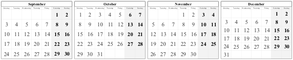
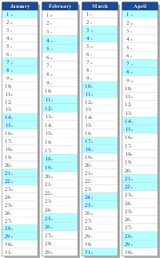
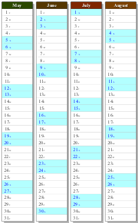
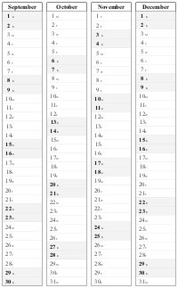
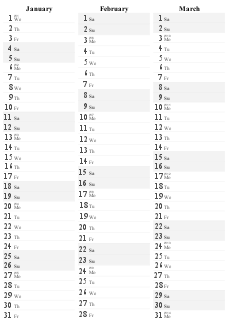
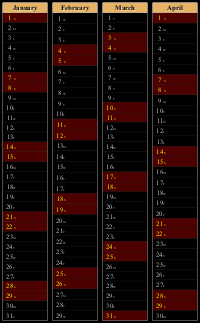

Introduction
Callirhoe is a free and open-source pdf calendar generator as well as a photo calendar maker. It is written in Python and it produces high quality output in vector (pdf) or raster (png) formats using the Cairo graphics library. It is a programming environment where each calendar template is valid Python code, giving the user ultimate flexibility. A high-level library for calendar rendering is provided, as well as a powerful command-line client.
 |
||
| Downloadable Calendars | Basic Users Guide (with screenshots) | Photo Guide :: contact sheet |
Features
- high quality vector graphics with alpha (translucency) support
- pdf (vector) or png (raster) output
- impressive photo calendars with translucent overlays, partial list of features:
- optimal calendar placement with minimal-entropy overlap!
- maximal-entropy cropping (aka smart-crop) then minimal-entropy overlay also supported ;)
- multi-threaded operation for efficiently handling large photo collections...
- photo shuffling etc.
- new features introduced in latest version 0.4.2 (Aug 2015):
- added option
--phantom-daysto put days from previous/next month in the unused cells [screenshot]
- added option
- classical matrix or bar layouts, symmetric and asymmetric

asymmetric boxes, with shadows 
more colorful, sloppy, but symmetric (note the empty lines); also, font rotation sucks a little due to hinting and low res; in higher res, or in pdf, it looks as it should ;)  no colors, neither shadows, asymmetric     asymmetric symmetric asymmetric, bw sparse - holiday support (programmable)
- Catholic & Orthodox Easter based holidays, Greek name days
- multiple languages (Greek, English, French, German, Turkish, ...)
- complete programming environment:
- fully documented code (epydoc)
- multiple layouts (tiles, bars, sparse, weekly, monthly, annual, bi-annual...)
- fully customizable (colors, fonts, etc.)
Upcoming features
- svg output
- multiple data sources (ics files, CalDAV, Google Calendar...)
You're more than welcome to send me styles, color themes, translations ...
Examples
Create a calendar of the current year (by default in a 4x3 grid):
$ callirhoe my_calendar.pdf
$ callirhoe --landscape my_calendar.pdf
$ callirhoe --paper=a4w --rows=3 my_calendar.pdf
$callirhoe -t bars my_calendar.pdf
$ callirhoe -t bars --landscape --rows=1 my_calendar.pdf
$ callirhoe -t sparse -s bw_sparse --rows=1 --cols=3 my_calendar.pdf
$ callirhoe 0:24 0 my_calendar.pdf
$ callirhoe my_poster.png --paper=a3 --dpi=600 --opaque
$ callirhoe wallpaper.png --paper=-1920:-1080 --opaque --rows=3 --no-shadow -s rainbow-gfs
|  |